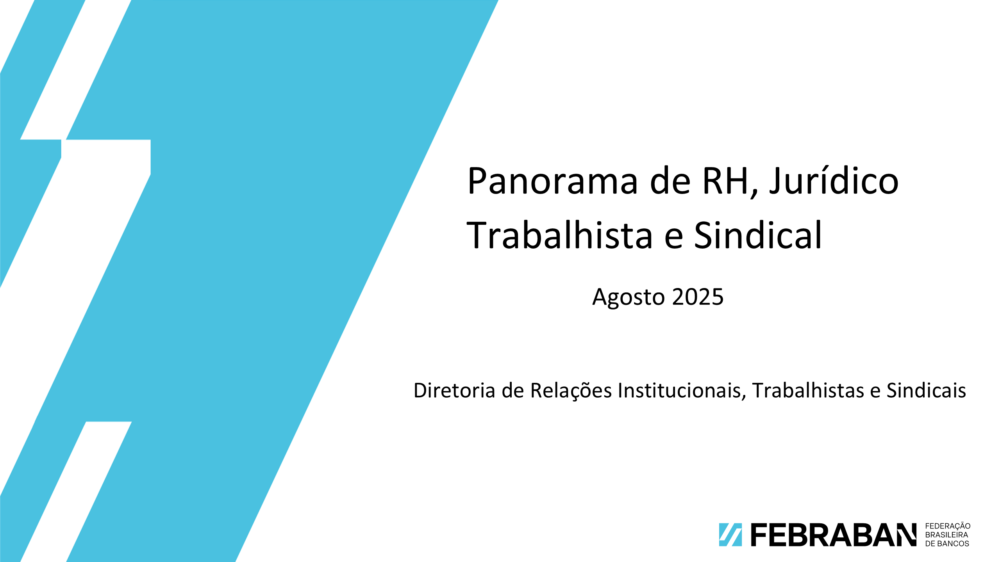

Panorama de RH, Jurídico Trabalhista e Sindical - Resumo
Em construção...
Panorama de RH, Jurídico Trabalhista e Sindical – Ranking Quantidade de Clientes
Em construção...
Panorama de RH, Jurídico Trabalhista e Sindical – Empregados e SM
Em construção...
Panorama de RH, Jurídico Trabalhista e Sindical – JT
Em construção...
Panorama de RH, Jurídico Trabalhista e Sindical – Relações Sindicais
Em construção...